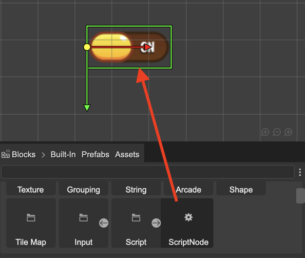
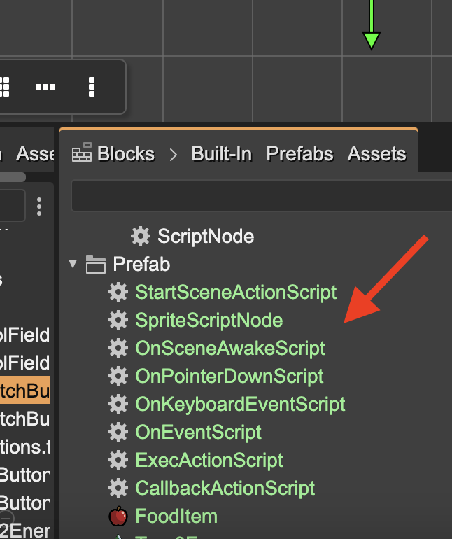
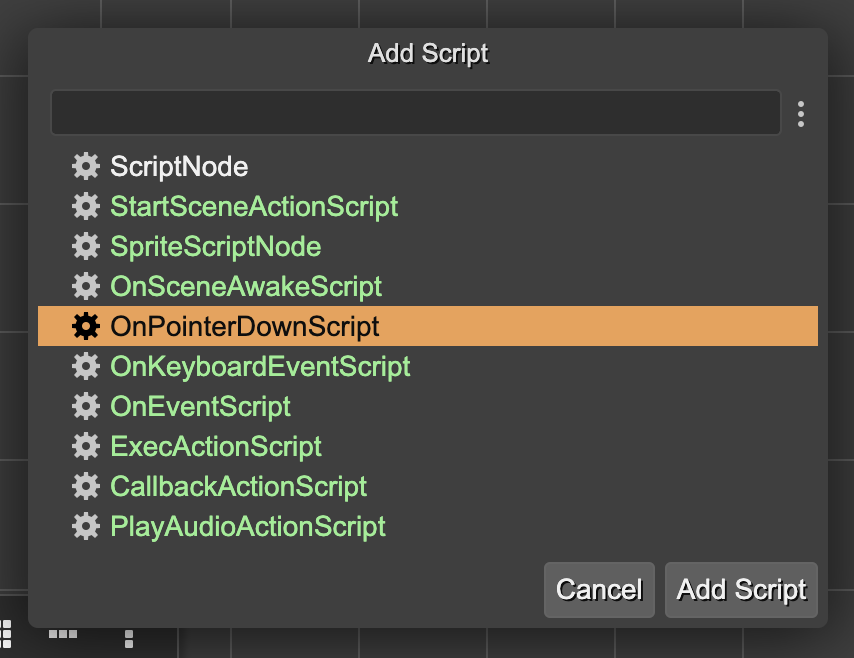
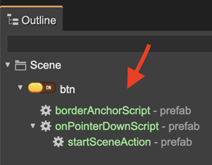

Creating a Script Node
A ScriptNode object shares a lot with the game objects, you can add it to the scene by dragging it from the Blocks view and dropping it on the scene:
That action creates an instance of the ScriptNode class and adds it to the object selected in the scene. If no object is selected, then it adds the script node to the scene.
In addition to an instance of the ScriptNode class, you can add an instance of a ScriptNode prefab. The script node prefabs are shown next to the other prefabs in the Blocks view:
another way of adding a script node is by selecting the Add Script option in the Script context menu. It is also available as a command (U).
It opens the Add Script dialog. There you can select the script you want to add:
Browsing the Script Nodes
The script nodes are displayed in the Outline view, below the parent object, or the scene:
Also, you can browse the scripts of an object by pressing the command Shift+U. The command is also available in the Script section of the context menu. That command opens the Browse Scripts dialog:
Code generation of the creation of a script
When you add a ScriptNode to an object, it generates a code like this:
editorCreate() {
// btn
const btn = this.add.image(359, 223, "ui", "btn.png");
// onPointerDownScript
new OnPointerDownScript(btn);
...
}
It is the code generated by the scene compiler when you add a script node prefab. If you add an instance of the built-in ScriptNode, the code is similar, but using the ScriptNode class:
editorCreate() {
// btn
const btn = this.add.image(359, 223, "ui", "btn.png");
// scriptnode_1
new ScriptNode(btn);
...
}
The ScriptNode class is not part of |Phaser|_, but it could be generated by Phaser Editor 2D. The next section is about it.